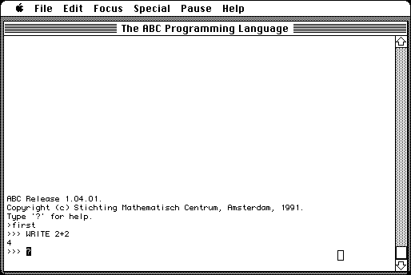

Download
abc.mac.zip (168K) MacABC 1.04.01 repackaged into a zipped hfs disk image and checksum file. The disk image can be mounted with Mini vMac.
abc.mac.sit.hqx (319K) MacABC 1.04.01 in the original format.
copyright: Stichting Mathematisch Centrum, Amsterdam
mod date: Apr 9, 1991
license: free for non-commercial use
last known url
(gone)
“ABC interpreter & environment”. By Eddy Boeve, Frank van Dijk, Timo Krijnen, Lambert Meertens, Steven Pemberton, and Guido van Rossum. More info at http://homepages.cwi.nl/~steven/abc/.

If you find these downloads useful, please consider helping the Gryphel Project, which hosts them.
Here are the md5 checksums for the downloads, signed with Gryphel Key 5:
--------- GRY SIGNED TEXT --------- bb55a6eeb5e1bad6fdc2b23540e24fb2 abc.mac.zip 61bdc6f08f7d8c9640e24f1943e6e214 abc.mac.sit.hqx ------- BEGIN GRY SIGNATURE ------- Gry/4Xa8CFcUzxdN/Glgh3Bzb7moDvdkuVH169+pZ4q19xl2DcJ8M+R6yOfnn6m+ B8K0Y0JLVt/w3M877KRfG5SonFs53EB3rXOT4Mym/d98PFqg0a0PcEAvioRWmFLs xpFuvTpdnkWUB3SoYl7sOu+l/yPlaEkyvsy1a8AurRl4xDnR0yw9KxO5XJYM3uAG -------- END GRY SIGNATURE --------